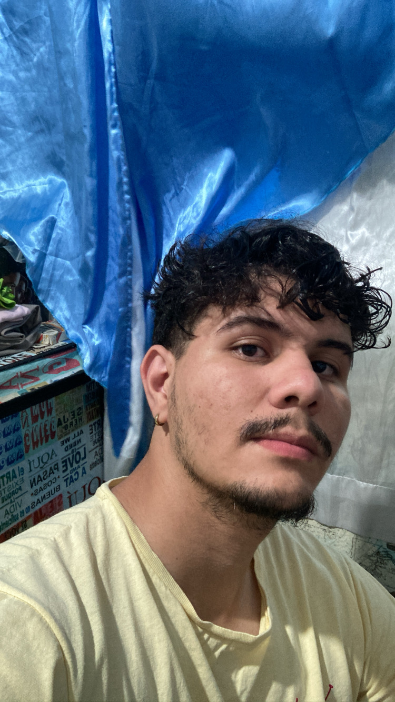

My Social Networking
Who is me?

Olá, meu nome é Nathan de Farias Melo, tenho 23 anos, sou um estudante de tecnologia desde outubro de 2020. Aconteceram varias coisas
no decorrer do tempo, que me impediram de estudar 100%, sinto que perdi muito tempo, porém sei também que faltou um pouco de foco,
hoje trabalhando, acaba que de certa forma não tenho tanto tempo para estudar, mas não haverá mais desculpas, hoje estou muito infeliz no trabalho atual, quero
muito migrar para a àrea de tecnologia, confesso que ainda não estou estudando muito bem, mas isso irá mudar. Preciso fazer isso por
mim e pela minha família. Pretendo voltar aqui daqui uns 4,5 anos e rever esse código, e relembrar todo o caminho que foi percorrido.
How to speak with me?
 /FMNathan
- Acesse meu repositório público no Github.
/FMNathan
- Acesse meu repositório público no Github.
 /fright6464
- Se inscreva no meu canal do YouTube.
/fright6464
- Se inscreva no meu canal do YouTube.